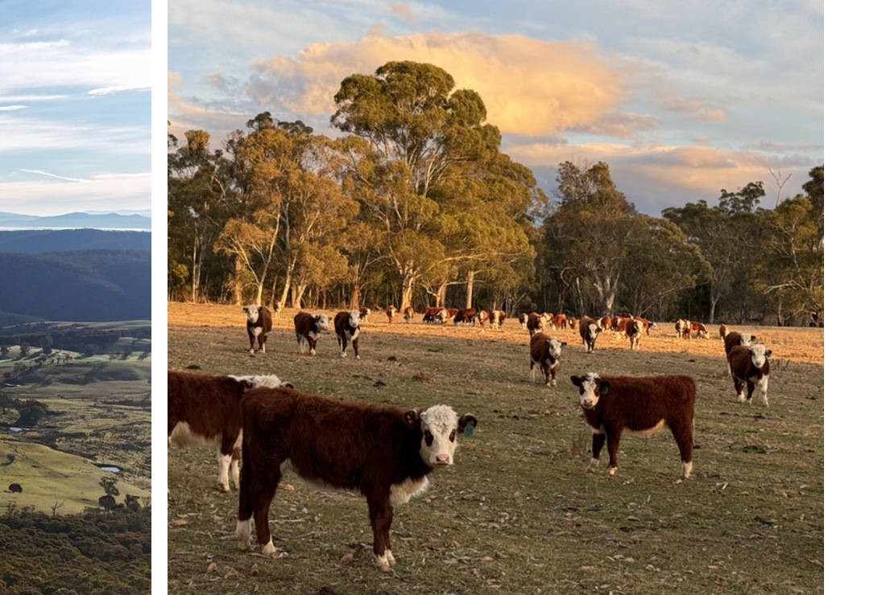

Service 06
Thermal wildlife & animal surveys
Efficient animal detection across large or difficult areas with minimal disturbance.
What we do
Built for real operating conditions
Thermal imaging can detect and locate animals that are difficult or impossible to identify in conventional aerial imagery.
Four Peaks Pastoral can survey large areas efficiently while limiting disturbance to livestock and native wildlife, then provide mapped observations for property, project or ecological teams.

06 / 07
Thermal survey capability
- Pest animal detection and population surveys
- Feral deer, wild dog, fox and pig monitoring
- Kangaroo population assessments
- Livestock location and recovery
- Native wildlife identification and habitat monitoring
- Pre-operational environmental assessments
- Plantation and carbon project wildlife monitoring
- Biodiversity and ecological reporting support